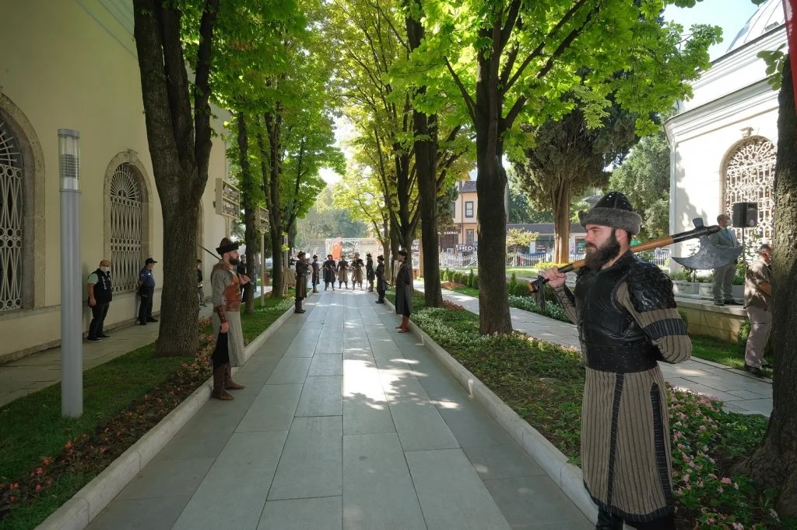
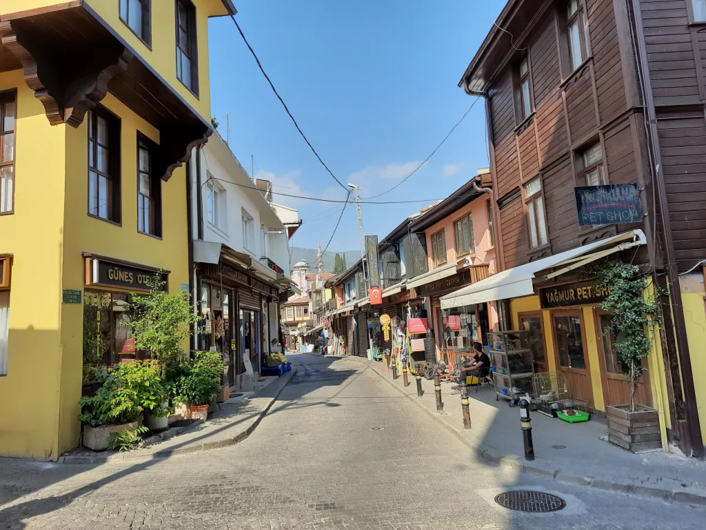
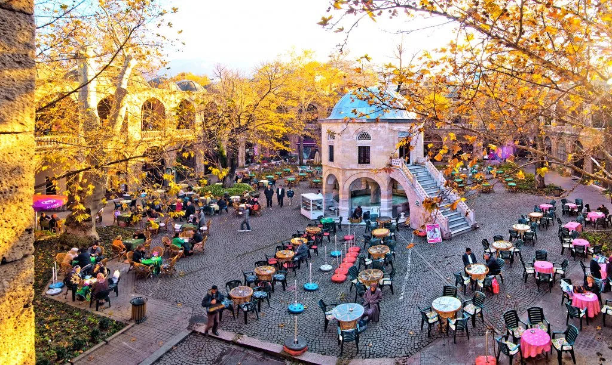
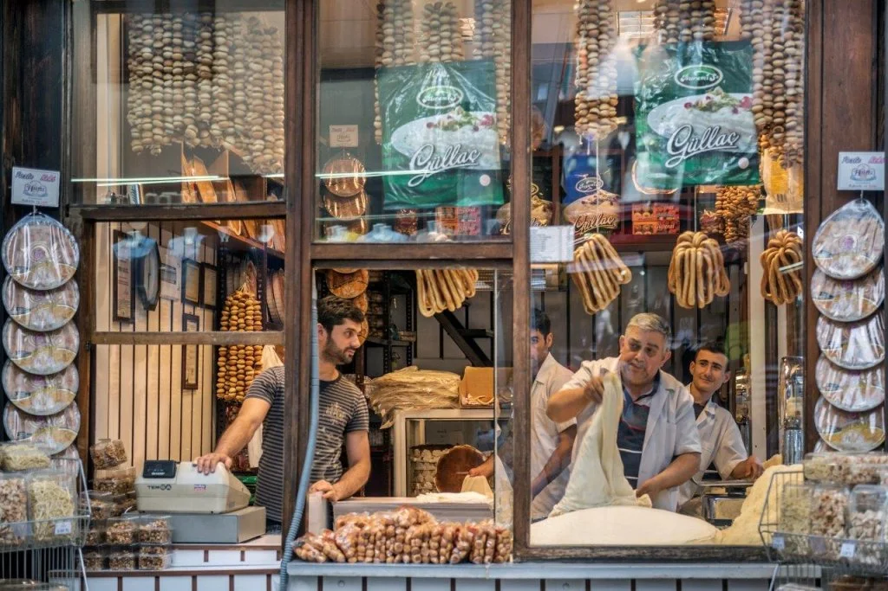
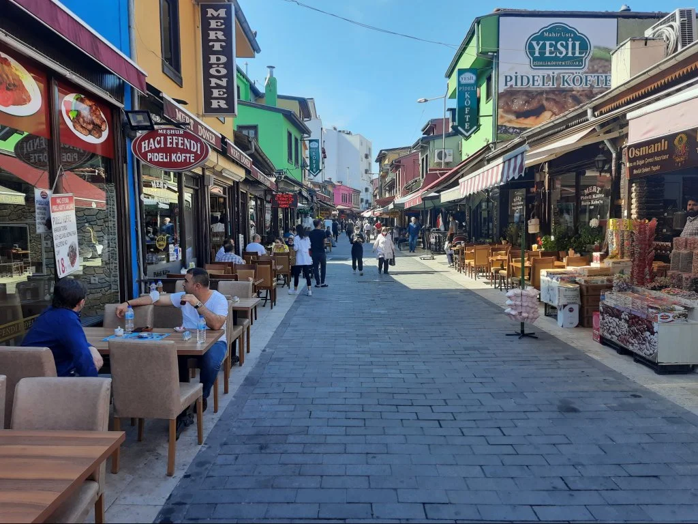
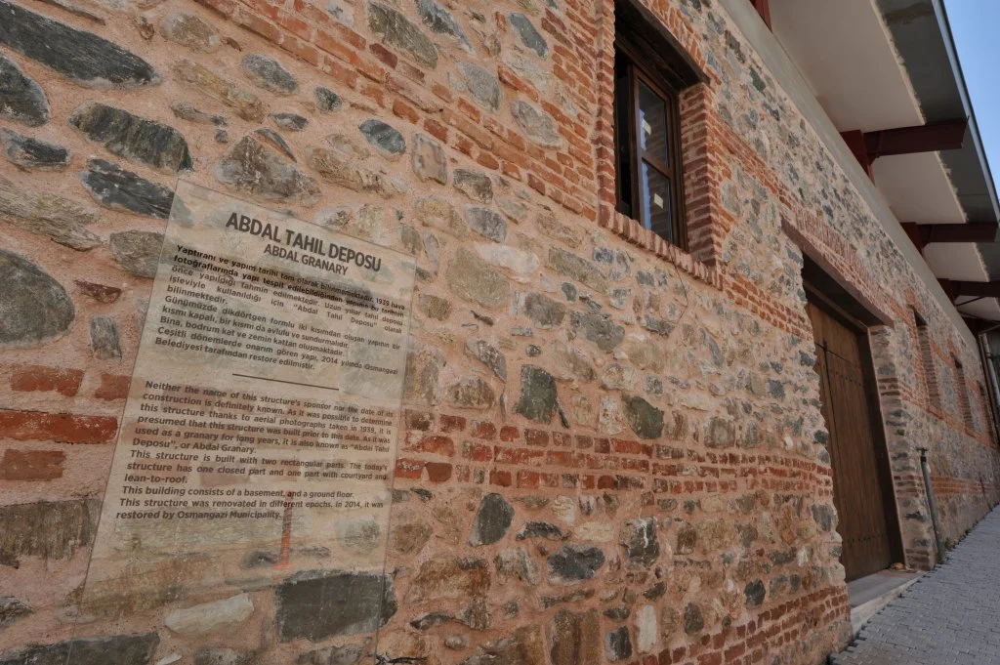
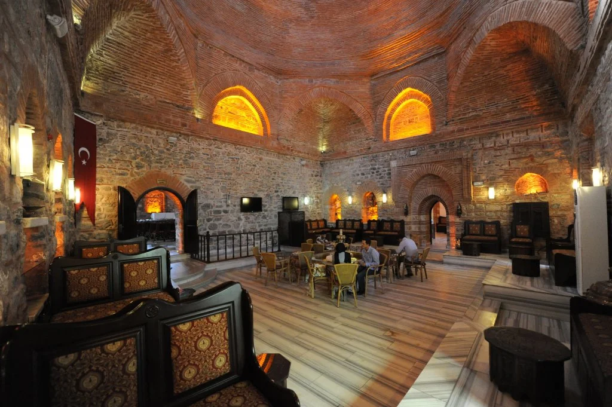

Gastronomi & Kültür Rotaları
Gastro Tur: Merkez
Bursa mutfağı, yüzyıllar boyunca farklı kültürlerin bir araya gelmesiyle şekillenmiş. Bu rotada şehir merkezinde yaklaşık 700 yıllık Bursa kebabını deneyebilir, Kayhan Çarşısı'nda pideli köfte yiyebilirsiniz. Tuz Pazarı'nda cantık, Tahtakale'de süt helvası, Koza Han'da dondurmalı irmik tatlısı tatmadan dönmeyin. Atatürk Caddesi boyunca kestane şekeri ve seyyar arabalarda Bağdat hurma tatlısı bulabilirsiniz. Koza Han'da közde Türk kahvesi, Ördekli Kültür Merkezi'nde Osmanlı çayı içebilirsiniz. Abdal Mehmed Camii çevresinde ise tahinli pide, Bursa simidi ve cevizli lokum üçlüsü sizi bekliyor.
Rota Durakları

1Tophane Meydanı

2Tahtakale Çarşısı

3Koza Han

4Tuz Pazarı

5Kayhan Çarşısı

6Abdal Camii Çevresi

7Ördekli Kültür Merkezi
Diğer Rotalar

Zeytin ve Zeytinyağı Rotası
8 Durak

2543 Metreye Yolculuk
6 Durak

Osmanlı Padişahları Turu
6 Durak

Bir Günde Bursa Turu
6 Durak